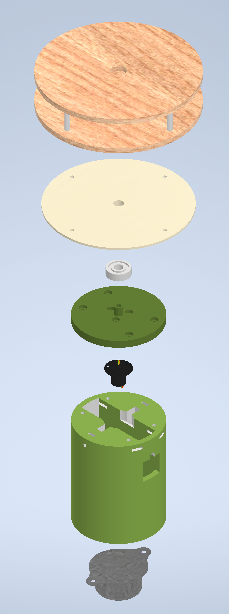
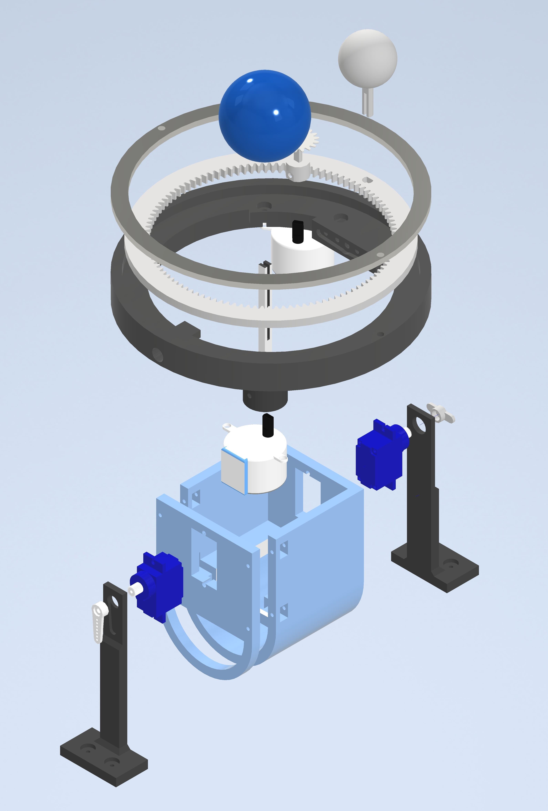
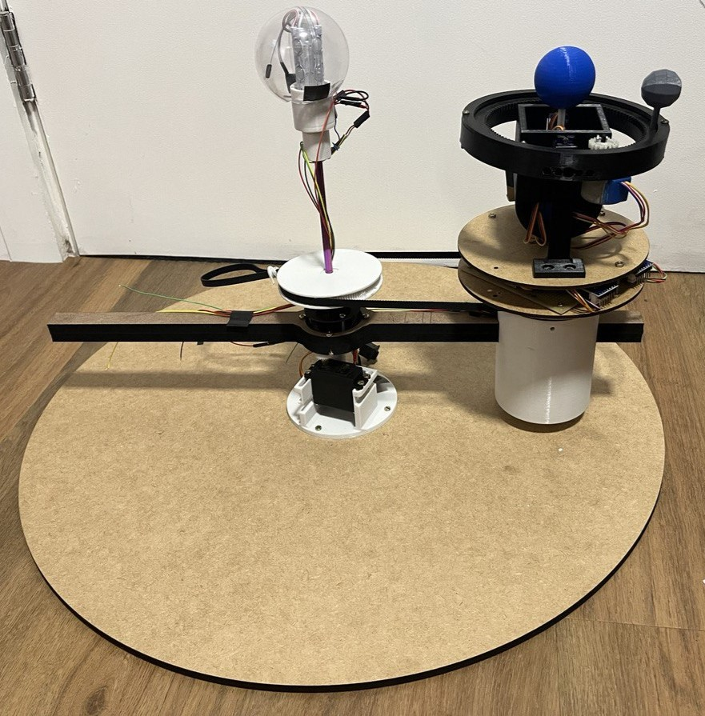

Reconfigurable
Planetary System
A modular mechanical orrery where each planet's translation, rotation, axial tilt, and satellite orbit can be studied independently — designed for STEAM education, with mathematically scaled dimensions and orbital periods.
The problem
Traditional solar system models are fixed — they show one configuration and can't be adapted to focus on a single planet or its satellite. For STEAM education this limits how teachers can use them interactively in class.
The goal was a modular system: the structure physically adapts depending on which planet is being studied, and each planet's orbital mechanics — translation, rotation, axial tilt, and satellite revolution — can be explored in isolation.
Scaled dimensions & orbital periods
Rather than arbitrary proportions, the system uses a base-10 logarithmic scale for planet diameters (so Jupiter at 51.6 mm and Mercury at 36.9 mm remain visually distinct) and a separate log scale for orbital distances — placing Mercury at ~100 mm and Neptune at ~200 mm from the central lamp. Orbital and rotation speeds are derived from real astronomical data, scaled so Jupiter's rotation period sets the maximum motor speed.
Mechanical design
Each planet module uses a stepper motor for rotation, two micro-servo motors for axial tilt and satellite orbit inclination, and a ring gear driven by the satellite servo inside a compact planetary housing (Caixa Planetária). The satellite arm mounts on the ring and stays synchronized — always showing the same face toward the planet, reproducing synchronous rotation. All components were modelled in Autodesk Inventor, then fabricated via 3D printing (PLA) and laser-cut acrylic/MDF at the Laboratório Aberto de Brasília.
Exploded views
The three assemblies below show every modelled component: the main shaft and translation arm, the planetary support structure, and the full planet + satellite mechanism.



Electronics & control
An Arduino Uno manages 4 motors simultaneously — a stepper for planetary rotation, a stepper for satellite revolution, and two servos for axial tilt and orbital inclination. Slip rings (anéis coletores) at rotation joints prevent wire tangling during full translation. Speed ratios are calculated from real astronomical data so each planet runs at its correct relative period.
Key challenge: The translation servo had only a 180° range, so the firmware automatically returns to the start position and continues, allowing continuous orbital demonstration within that constraint.
Final prototype

The first version was tested with Mercury, Venus, and Earth + Moon. All seven motion requirements were met — translation, rotation, axial tilt, satellite revolution, synchronous satellite rotation, direction-locked translation plane, and easy planet swap — except continuous translation (limited by the servo range, handled in firmware).
My contributions
- Full mechanical design in Autodesk Inventor — planetary housing, ring gear, shaft, translation arm, modular brackets
- Mathematical scaling of planet sizes, orbital distances, and rotation/translation speeds from real astronomical data
- 3D printing all structural and gear components in PLA; laser cutting base and mounting plates in acrylic/MDF
- Arduino firmware — 4-motor synchronization with astronomically derived speed ratios and automatic translation return
- Dynamic simulation in Inventor to validate movement before fabrication
- Written thesis (125 pp.) documenting design decisions, scale derivations, and educational applications
- Supervisors: Prof. Dr. Carla Maria Chagas E. Cavalcante Koike & Prof. Dr. Jones Yudi Mori Alves da Silva — UnB